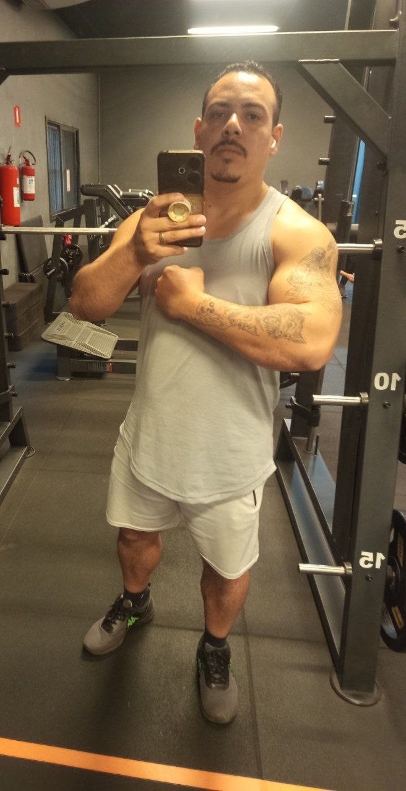

Mercado cripto, DeFi e IA todos os dias. Criador do BTC Lottery Miner, suporte em PixGo, CryPix e BrSwap. Aprendiz eterno de Satoshi.
Sou apaixonado pelo mercado cripto, por DeFi e pelas tecnologias de inteligência artificial. Aprendo todos os dias e acredito que quem para de estudar fica para trás nesse ecossistema que não dorme.
Leitura de tendências, suportes, resistências e estrutura do mercado cripto.
BTC Lottery Miner: mineração solo de Bitcoin direto do Windows, open source.
Aplico e estudo inteligência artificial todos os dias, da automação à análise.
Atendimento em PixGo, CryPix e BrSwap, ajudando usuários a navegar no cripto.
"Quem não é um mero aprendiz de Satoshi ainda não entendeu o Bitcoin."